Digitalization and sustainability enthusiast with a wealth of diverse life and technical experience that I love to bring into every project! Organised Curious Ambitious Self-starter by nature enjoying learning continuously and pushing myself out of my comfort zone. Highly value efficiency combined with application reliability and speed for a smooth user experience. Enjoy supporting and promoting minimal effective design solutions that can continuously improve without missing an eastheticly pleasing experience! Thriving in Dinamic Diverse Innovative Collaborative environments bringing forward impactful ideas!
Coding Languages
HTML5
CSS3
Sass
JavaScript
Python
Libraries & Frameworks
Bootstrap
Materialize
Jquery
django
Tools & Platforms
GitHub
Visual Studio
Amazon Web Service
Heroku
MongoDB
Work in Progress
React.js
Node.js
TypeScript
Angular.js
EDUCATION TIMELINE
2020 - 2019
Full Stack Software Developer Diploma
FRONT END
Smart web developer focus on User Experience and applying responsive mobile- first design using the trinity of HTML, CSS and JavaScript.
Ability to use libraries such as Boothstrap and Materialize for ready-made fast templates to personalise.
Implementing Sass stylesheet for smarter, shorter and more efficient coding with more functionality without the need of JS.
Creating more interacting web applications with integration of external API for more functionality like mapping, payments or others.
BACKEND
Building data-driven web applications using Python and JS with the support of JQuery and Django frameworks, and the support of platforms such as Heroku, MongoDB and AWS
WORKFLOW
Confident user of coding platforms such as GitHub and Virtual Studio as well as cross-browser Testing & Debugging in the same.
Collaborative goals & Self-orgnised development, Curiosity, Continuous improvements and learning & flexible responses to changes
</> Check out my repositories on GitHub to see how this was done in practice!
Code Institute - Edinburgh Napier University
2018 - 2015
MSc Sustainability Science
● Training to conduct transdisciplinary environmental research with an emphasis on system thinking and the building of socio-ecological system resilience
● Learning multiple research approaches and methods for studying the interaction between the social and ecological systems for developments that can sustain human's socio-economic activities without compromise local, regional and global environmental quality
● Gaining knowledge of system thinking methods and practices to develop new approaches to the management and governance of the social-ecological system
● Engaging with the ongoing research at the centre throughout the study programme with opportunities to have hands-on experiences in appling advanced sustainability theories into real case studies
● 1-year project about the fashion industry's environmental impact focusing on cotton, Life Cycle Assessment, Planetary Boundaries and Circular Economy. This was my Master's thesis and was part of a broader project called "Fashion Within Boundaries", with the Ellen MacArthur Foundation for circular economy and the fashion retailer H&M. The focus of the overall project was to understand how applied circular economic and business strategies can reduce pressure on Planetary Boundaries throughout the reduction of resource use and emissions. My focus involved tracking and measuring emissions and resource use of the textile supply chain throughout all processes from the growing of cotton, to processing, transporting, manufacturing, finishing processing, until disposal or possibly reuse or recycling. I have used Life Cycle Analysis to operationalise the scientific framework of the Planetary Boundaries. Hence, I have defined the system, I have collected and combined all data in GaBi (software for LCA), and then I have designed an analytical tool to measure and compare emission and resource use to Planetary Boundaries as a reference point while understanding the magnitude and type of beneficial effects of different circular strategies.
Stockholm Resilience Centre - Stockholm University
2014 - 2011
BSc Environmental Management
● Interdisciplinary approach social and ecological knowledge for understanding environmental issues and for finding possible solutions
● Multi-scale methods taking into account the connections between local and global challenges as well as stakeholders involved at different levels
● Looking into managerial-business perspective and social-environmental standards for developing strategies towards the improvement of Corporate Social Responsibility
● Project on waste management for the university using ISO14001 and EMAS certification in the UK
● The final thesis involved a quantitative statistical analysis on the interaction between environmental quality and socio-economic data with emphasis on the role of inequality with qualitative in-depth analysis for further interpretation of results
● Hands-on experiences beyond my academic courses, participating in several sustainability projects, events, forum and volunteering, to better understand in practice sustainability at work
● Internship with a natural conservation NGO based in Tenerife, Spain and focusing on ecotourism, data collection and raising awareness by communicating scientific information to the local communities and institutions, and to the tourists. Tasks inlcuded guiding tourists at whale watching boats providing information and raising awareness on conservation effort of the natural heritage of the archipelago. Collecting data accordingly to the parameters laid down by the Tethys Research Institute, including GPS data, acoustic material and photo ID. Implementing the research database covering: resident Short Finned Pilot Whales and Bottlenose Dolphin plus other cetaceous migrating species.
Birkbeck - University College of London
2005 - 2007
Diploma in Business and Accounting
Gained knowledge of accounting, budgeting, marketing, business strategies and management but also political economy, finance and law. Excellent mathematical skills were required for most subjects. Skills that became very useful later on in my professional and academic career.
Mosè Bianchi - Monza, Italy
EXPERIENCE TIMELINE
2020 - 2019
Web & Business Developer
● Designing and developing the company website.
● Implementing strategies for web presence including google advertising.
● Finding and developing new networks for collaborations and acquiring new customers.
Applivet - Milan, Italy
2016
Research Assistant
● Learning crucial steps in qualitative data management, analysis, visualisation and reporting of results.
● Conducting desk studies for academic publication, reports and information material.
● Using Nvivo analysis software building a database and analyse data for the GLEAN project.
● Coding and auto-coding the data of the database using Nvivo and formatting over 150 qualitative semi-structured interviews conducted in 10 Biosphere Reserves.
● Becoming familiar with participatory initiatives in several UNESCO Biosphere Reserves and participating in scientific discussions about adaptive management, adaptive governance, bridging organisations, stakeholders participation and knowledge sharing for sustainable development.
Stockholm Resilience Centre - Stockholm, Sweden
2009 - 2007
Administrative Officer
Applivet is a small family-run company operating in the building sector specialised in customised windows frames and glass structures for indoor or outdoor use. I acted as the point of contact for clients providing quotations, invoices and general administrative, buyer and sale support. My responsibility included general Administration, Debt Recovery, Credit Control, Bookkeeping, recording and tracking Sales, Purchases, Income and Payments. I have also provided administration of the company database and improved the system through greater digitilising of resources and transactions. Recently, I was commissioned to design and build the company's website Applivet.it
Applivet - Milan, Italy
2007 - 2003
Specialised Production Worker
● Manufacturing of mechanical parts of x-ray medical machines following technical instructions and technical drawings.
● Working with a team of about 10 people sharing department responsibility and organisation for implementing orders within deadlines.
● Keeping high-quality standards for implementation parts of specific advance models for prestigious clients such as Philips, Siemens and Kodak.
Ralco - Monza, Italy